폐기물처리기사 (2018-04-28 기출문제)
1과목: 폐기물 개론
1. 인구 50만명인 도시의 쓰레기발생량이 연간 165,000톤일 경우 MHT는?(단, 수거인부수＝148명, 1일 작업시간 8시간, 연간휴가일수＝90일)
- 1.5
- 2
- 2.5
- 3
(정답률: 79%)

2. 쓰레기의 발열량을 구하는 식 중 Dulong식에 대한 설명으로 맞는 것은?
- 고위발열량은 저위발열량, 수소함량, 수분함량만으로 구할 수 있다.
- 원소분석에서 나온 C, H, O, N 및 수분함량으로 계산할 수 있다.
- 목재나 쓰레기와 같은 셀룰로오스의 연소에서는 발열량의 약 10% 높게 추정된다.
- Bomb 열량계로 구한 발열량에 근사시키기 위해 Dulong의 보정식이 사용된다.
(정답률: 77%)
3. 도시폐기물을 X90=2.5cm로 파쇄하고자 할 때 Rosin-Rammler 모델에 의한 특성입자크기(X0, cm)는?(단, n=1로 가정)
- 1.09
- 1.18
- 1.22
- 1.34
(정답률: 71%)
4. 쓰레기 발생량을 예측하는 방법이 아닌 것은?
- Trend method
- Material balance method
- Multiple regression model
- Dynamic simulation model
(정답률: 89%)
5. 쓰레기소각로에서 효율을 향상인자가 아닌 것은?
- 적당한 압력
- 적당한 온도
- 적당한 연소시간
- 적당한 공연비
(정답률: 74%)
6. 도시폐기물의 화학적 특성 중 재의 융점을 설명한 것으로 ( ) 에 알맞은 것은?
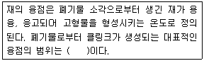
- 700∼800℃
- 900∼1,000℃
- 1,100∼1,200℃
- 1,300∼1,400℃
(정답률: 78%)
7. 폐기물의 성상조사 결과, 표와 같은 결과를 구했다. 이 지역에 Home Compaction Unit(가정용 부피 축소기)를 설치하고 난 후의 폐기물 전체의 밀도가 400kg/m3으로 예상된다면 부피 감소율(%)은?
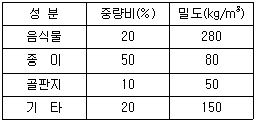
- 약 62
- 약 67
- 약 74
- 약 78
(정답률: 72%)
8. 인구 15만명, 쓰레기발생량 1.4kg/인·일, 쓰레기 밀도 400kg/m3, 운반거리 6km, 적재용량 12m3, 1회 운반 소요시간 60분(적재시간, 수송시간 등 포함)일 때 운반에 필요한 일일 소요 차량대수(대)는?(단, 대기 차량 포함, 대기 차량＝3대, 압축비＝2.0, 일일 운전시간 6시간)
- 6
- 7
- 8
- 11
(정답률: 63%)
9. 쓰레기 수거계획 수립 시 가장 우선되어야 할 항목은?
- 수거빈도
- 수거노선
- 차량의 적재량
- 인부수
(정답률: 92%)
10. 폐기물의 열분해에 관한 설명으로 틀린 것은?
- 폐기물의 입자 크기가 작을수록 열분해가 조성된다.
- 열분해 장치로는 고정상, 유동상, 부유상태 등의 장치로 구분되어질 수 있다.
- 연소가 고도의 발열반응임에 비해 열분해는 고도의 흡열반응이다.
- 폐기물에 충분한 산소를 공급해서 가열하여 가스, 액체 및 고체의 3성분으로 분리하는 방법이다.
(정답률: 75%)
11. 일반 폐기물의 수집운반 처리 시 고려사항으로 가장 거리가 먼 것은?
- 지역별, 계절별 발생량 및 특성 고려
- 다른 지역의 경유 시 밀폐 차량 이용
- 해충방지를 위해서 약제살포 금지
- 지역여건에 맞게 기계식 상차방법 이용
(정답률: 84%)
12. 비자성이고 전기전도성이 좋은 물질(동, 알루미늄, 아연)을 다른 물질로부터 분리하는 데 가장 적절한 선별 방식은?
- 와전류선별
- 자기선별
- 자장선별
- 정전기선별
(정답률: 85%)
13. 폐기물의 파쇄에 대한 설명으로 틀린 것은?
- 파쇄하면 부피가 커지는 경우도 있다.
- 파쇄를 통해 조성이 균일해 진다.
- 매립작업 시 고밀도 매립이 가능하다.
- 압축 시 밀도 증가율이 감소하므로 운반비가 감소된다.
(정답률: 76%)
14. 폐기물을 분류하여 철금속류를 회수하려고 할 때 가장 적당한 분리 방법은?
- Air separation
- Screening
- Floatation
- Magnetic Separation
(정답률: 89%)
15. 폐기물과 관련된 설명 중 맞는 것은?
- 쓰레기 종량제는 1992년에 전국적으로 실시하였다.
- SRF(Solid Refuse Fuel)를 통해 폐기물로부터 에너지를 회수할 수 있다.
- 쓰레기 수거 노동력을 표시하는 단위로 시간당 필요인원(man/hour)를 사용한다.
- 고로(高爐)에서는 고철을 재활용하여 철강재를 생산한다.
(정답률: 68%)
16. 쓰레기의 발생량에 가장 관계가 적은 것은?
- 주민의 생활법 및 문화수준
- 분리수거제도의 정책정도
- 수거차량의 용적 및 처리시설
- 법규 및 제도
(정답률: 76%)
17. 쓰레기에서 타는 성분의 화학적 성상 분석 시 사용되는 자동원소분석기에 의해 동시 분석이 가능한 항목을 모두 알맞게 나열한 것은?
- 질소, 수소, 탄소
- 탄소, 황, 수소
- 탄소, 수소, 산소
- 질소, 황, 산소
(정답률: 75%)
18. 수분함량이 20%인 쓰레기의 수분함량을 10%로 감소시키면 감소 후 쓰레기 중량은 처음 중량의 몇 %가 되겠는가?(단, 쓰레기의 비중＝10)
- 87.6%
- 88.9%
- 90.3%
- 92.9%
(정답률: 74%)
19. 적환장에 대한 설명으로 틀린 것은?
- 폐기물의 수거와 운반을 분리하는 기능을 한다.
- 적환장에서 재생 가능한 물질의 선별을 고려하도록 한다.
- 최종처분지와 수거지역의 거리가 먼 경우에 설치 운영한다.
- 고밀도 거주지역이 존재할 때 설치 운영한다.
(정답률: 83%)
20. 입자성 물질의 겉보기 비중을 구할 때 맞지 않는 것은?
- 미리 부피를 알고 있는 용기에 시료를 넣는다.
- 60cm 높이에서 2회 낙하시킨다.
- 낙하시켜 감소하면 감소된 양만큼 추가하여 반복한다.
- 단위는 kg/m3 또는 ton/m3로 나타낸다.
(정답률: 86%)
2과목: 폐기물 처리 기술
21. 슬러지를 개량하는 목적으로 가장 적합한 것은?
- 슬러지의 탈수가 잘 되게 하기 위해서
- 탈리액의 BOD를 감소시키기 위해서
- 슬러지 건조를 촉진하기 위해서
- 슬러지의 악취를 줄이기 위해서
(정답률: 78%)
22. 침출수 중에 함유된 고농도의 질소를 제거하기 위해 적용되는 생물학적 처리방법의 MLE(Modified Ludzack Ettinger) 공정에서 내부 반송비가 300%인 경우 이론적인 탈질효율 (%)은?(단, 탈질조로 내부반송되는 질소산화물은 전량 탈질된다고 가정)
- 50
- 67
- 75
- 80
(정답률: 47%)
23. 폐기물 매립장의 복토에 대한 설명으로 틀린 것은?
- 폐기물을 덮어 주어 미관을 보존하고 바람에 의한 날림을 방지한다.
- 매립가스에 의한 악취 및 화재발생 등을 방지한다.
- 강우의 지하침투를 방지하여 침출수 발생을 최소화할 수 있다.
- 복토재로 부숙토(콤포스트)나 생물발효를 시킨 오니를 사용하면 폐기물의 분해를 저해할 수 있다.
(정답률: 71%)
24. 유동상식 소각로의 특징과 거리가 먼 것은?
- 반응시간이 빠르고 연소효율이 높다.
- 이차연소실이 필요하다.
- 과잉공기량이 낮아 NOx가 적게 배출된다.
- 유동매체의 손실로 인한 보충이 필요하다.
(정답률: 77%)
25. 함수율이 99%인 슬러지와 함수율이 40%인 톱밥을 2：3으로 혼합하여 복합비료로 만들고자 할 때 함수율(%)은?
- 약 61
- 약 64
- 약 67
- 약 70
(정답률: 73%)
26. 폐수유입량이 10,000m3/day이고 유입폐수의 SS가 400mg/L이라면 이것을 alum(Al2(SO4)3·18H2O) 350mg/L로 처리할 때 1일 발생하는 침전슬러지(건조고형물 기준)의 양(kg)은?(단, 응집침전 시 유입 SS의 75%가 제거되며 생성되는 Al(OH)3는 모두 침전하고 CaSO4는 용존 상태로 존재, Al：27, S：32, Ca：40)
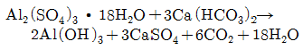
- 약 3,520
- 약 3,620
- 약 3,720
- 약 3,820
(정답률: 30%)
27. 석면해체 및 제조작업의 조치기준으로 적합하지 않은 것은?
- 건식으로 작업할 것
- 당해장소를 음압으로 유지시킬 것
- 당해장소를 밀폐시킬 것
- 신체를 감싸는 보호의를 착용할 것
(정답률: 77%)
28. 토양오염처리기술 중 화학적 처리 기술이 아닌 것은?
- 토양증기추출
- 용매추출
- 토양세척
- 열탈착법
(정답률: 54%)
29. 용매추출처리에 이용 가능성이 높은 유행폐기물과 가장 거리가 먼 것은?
- 미생물에 의해 분해가 힘든 물질
- 활성탄을 이용하기에는 농도가 너무 높은 물질
- 낮은 휘발성으로 인해 스트리핑하기가 곤란한 물질
- 물에 대한 용해도가 높아 회수성이 낮은 물질
(정답률: 66%)
30. 중유연소 시 황산화물을 탈황시키는 방법이 아닌 것은?
- 미생물에 의한 탈황
- 방사선에 의한 탈황
- 금속산화물 흡착에 의한 탈황
- 질산염 흡수에 의한 탈황
(정답률: 62%)
31. 부식질(Humus)의 특징으로 옳지 않은 것은?
- 뛰어난 토양 개량제이다.
- C/N비가 30∼50 정도로 높다.
- 물 보유력과 양이온교환능력이 좋다.
- 짙은 갈색이다.
(정답률: 83%)
32. 쓰레기매립지의 침출수 유량조정조를 설치하기 위해 과거 10년간의 강우조건을 조사한 결과 다음 표와 같다. 매립작업면적은 30,000m2이며, 매립작업 시 강우의 침출계수를 0.3으로 적용할 때 침출수 유량조정조의 적정용량(m3)은?
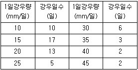
- 945m3 이상
- 930m3 이상
- 915m3 이상
- 900m3 이상
(정답률: 41%)
33. COD/TOC＜2.0, BOD/COD＜0.1인 매립지에서 발생하는 침출수 처리에 가장 효과적이지 못한 공정은?(단, 매립연한이 10년 이상, COD(mg/L)＝500 이하)
- 생물학적처리공정
- 역삼투공정
- 이온교환공정
- 활성탄흡착공정
(정답률: 64%)
34. 슬러지를 안정화시키는데 사용되는 첨가제는?
- 시멘트
- 포졸란
- 석회
- 용해성 규산염
(정답률: 69%)
35. 고형 폐기물의 매립 시 10kg의 C6H12O6가 혐기성분해를 한다면 이론적 가스발생량(L)은? (단, 밀도：CH4 0.7167g/L, CO2 1.9768g/L)
- 약 7,131
- 약 7,431
- 약 8,131
- 약 8,831
(정답률: 60%)
36. 포졸란(POZZOLAN)에 관한 설명으로 알맞지 않은 것은?
- 포졸란의 실질적인 활성에 기여 부분은 CaO이다.
- 규소를 함유하는 미분상태의 물질이다.
- 대표적인 포졸란으로는 분말성이 좋은 Fly ash가 있다.
- 포졸란은 석회와 결합하면 불용성 수밀성 화합물을 형성한다.
(정답률: 48%)
37. 매립의 종류 중 매립구조에 따른 분류가 아닌 것은?
- 혐기성 위생매립
- 위생매립
- 혐기성 매립
- 호기성 매립
(정답률: 73%)
38. 토양의 현장처리기법 중 토양세척법의 장점이 아닌 것은?
- 유기물 함량이 높을수록 세척효율이 높아진다.
- 오염토양의 부피를 급격히 줄일 수 있다.
- 무기물과 유기물을 동시에 처리할 수 있다.
- 다양한 오염 토양 농도에 적용가능하다.
(정답률: 58%)
39. 퇴비화 과정에서 필수적으로 필요한 공기 공급에 관한 내용 중 알맞지 않은 것은?
- 온도조절 역할을 수행한다.
- 일반적으로 5∼15%의 산고가 퇴비물질 공극 내에 잠재하도록 해야 한다.
- 공기주입률은 일반적으로 15∼20L/min·m3 정도가 적합하다.
- 수분증발 역할을 수행하며 자연순환 공기공급이 가장 바람직하다.
(정답률: 64%)
40. 인구 100만 명인 도시의 쓰레기 발생률은 2.0kg/인·일이다. 아래의 조건들에 따라 쓰레기를 매립하고자 할 때 연간 매립지의 소요면적(m2)은?(단, 매립쓰레기 압축밀도＝500kg/m3, 매립지 Cell 1층의 높이＝5m, 총 8개의 층으로 매립, 기타 조건은 고려하지 않음)
- 32,500
- 34,200
- 36,500
- 38,200
(정답률: 68%)
3과목: 폐기물 소각 및 열회수
41. 고체 및 액체 연료의 연소 이론 산소량을 중량으로 구하는 경우, 산출식으로 옳은 것은?
- 2.67C ＋ 8H ＋ O ＋ S(kg/kg)
- 3.67C ＋ 8H ＋ O ＋ S(kg/kg)
- 2.67C ＋ 8H － O ＋ S(kg/kg)
- 3.67C ＋ 8H － O ＋ S(kg/kg)
(정답률: 79%)
42. 고체연료의 장점이 아닌 것은?
- 점화와 소화가 용이하다.
- 인화, 폭발의 위험성이 적다.
- 가격이 저렴하다.
- 저장, 운반 시 노천 야적이 가능하다.
(정답률: 78%)
43. 폐기물의 저위발열량을 폐기물 3성분 조성비를 바탕으로 추정할 때 3가지 성분에 포함되지 않는 것은?
- 수분
- 회분
- 가연분
- 휘발분
(정답률: 70%)
44. 기체연료 중 건성가스의 주성분은?
- H2
- CO
- CO2
- CH4
(정답률: 61%)
45. 저위발열량이 8,000kcal/Sm3인 가스연료의 이론연소온도(℃)는?(단, 이론연소가스량은 10Sm3/Sm3, 연료연소가스의 평균정압비열은 0.35kcal/Sm3℃, 기준온도는 실온(15℃), 지금 공기는 예열되지 않으며, 연소가스는 해리되지 않는 것으로 한다.)
- 약 2,100
- 약 2,200
- 약 2,300
- 약 2,400
(정답률: 67%)
46. 다단로 소각로방식에 대한 설명으로 옳지 않은 것은?
- 온도제어가 용이하고 동력이 적게 들며 운전비가 저렴하다.
- 수분이 적고 혼합된 슬러지 소각에 적합하다.
- 가동부분이 많아 고장률이 높다.
- 24시간 연속운전을 필요로 한다.
(정답률: 52%)
47. 폐타이어를 소각 전에 분석한 결과, C 78%, H 6.7%, O 1.9%, S 1.9%, N 1.1%, Fe 9.3%, Zn 1.1%의 조성을 보였다. 공기비(m)가 2.2일 때, 연소 시 발생되는 질소의 양 (Sm3/kg)은?
- 약 15.16
- 약 25.16
- 약 35.16
- 약 45.16
(정답률: 37%)
48. 주성분이 C10H17O6N인 활성슬러지 폐기물을 소각처리하려고 한다. 폐기물 5kg당 필요한 이론적 공기의 무게(kg)는?(단, 공기 중 산소량은 중량비로 23%)
- 약 12
- 약 22
- 약 32
- 약 42
(정답률: 50%)
49. 폐열회수를 위한 열교환기 중 연도에 설치하며, 보일러 전열면을 통하여 연소가스의 여열로 보일러 급수를 예열하여 보일러 효율을 높이는 장치는?
- 재열기
- 절탄기
- 공기예열기
- 과열기
(정답률: 72%)
50. 30ton/day의 폐기물을 소각한 후 남은 재는 전체 질량의 20%이다. 남은 재의 용적이 10.3m3일 때 재의 밀도(ton/m3)는?
- 0.32
- 0.58
- 1.45
- 2.30
(정답률: 67%)
51. 통풍에 관한 설명으로 옳지 않은 것은?
- 자연통풍은 연돌에만 의존하는 통풍이다.
- 흡인통풍의 경우, 일반적으로 연소실내 압력을 (－)로 유지한다.
- 평형통풍은 냉공기의 침입 및 화염의 손실을 방지하는 이점이 있다.
- 연돌고를 2배 증가시키면 통풍력은 2배로 향상된다.
(정답률: 57%)
52. 가로 1.2m, 세로 2.0m, 높이 11.5m의 연소실에서 저위발열량 10,000kcal/kg의 증유를 1시간에 100kg 연소한다. 연소실의 열발생률(kcal/m3·h)은?
- 약 29,200
- 약 36,200
- 약 43,200
- 약 51,200
(정답률: 73%)
53. 유동층 소각로의 장점이 아닌 것은?
- 연소효율이 높아 미연소분의 배출이 적고 2차 연소실이 불필요하다.
- 유동매체의 열용량이 커서 액상, 기상, 고형폐기물의 전소 및 혼소가 가능하다.
- 유동매체의 축열량이 높은 과계로 단기간 정지 후 가동 시 보조연료 사용 없이 정상가동이 가능하다.
- 층의 유동으로 상(床)으로부터 찌꺼기 분리가 용이하다.
(정답률: 55%)
54. 폐기물 내 유기물을 완전연소시키기 위해서는 3T라는 조건이 구비되어야 한다. 3T에 해당하지 않는 것은?
- 충분한 온도
- 충분한 연소시간
- 충분한 연료
- 충분한 혼합
(정답률: 79%)
55. 소각로에 발생하는 질소산화물의 발생억제방법으로 옳지 않은 것은?
- 버너 및 연소실의 구조를 개선한다.
- 배기가스를 재순환한다.
- 예열온도를 높여 연소온도를 상승시킨다.
- 2단 연소시킨다.
(정답률: 74%)
56. 폐기물 1톤을 소각 처리하고자 한다. 폐기물의 조성이 C：70%, H：20%, O：10%일 때 이론공기량(Sm3)은?
- 약 6,200
- 약 8,200
- 약 9,200
- 약 11,200
(정답률: 59%)
57. 발열량 계산의 대표적인 공식인 Dulong식의 (H-O/8)과 (9H＋W)의 의미로 가장 알맞게 짝지워진 것은?
- 이론수소－총수분량
- 결합수소－증발잠열
- 과잉수소－증발잠열
- 유효수소－총수분량
(정답률: 68%)
58. 폐기물 50ton/day를 소각로에서 1일 24시간 연속가동하여 소각처리할 때 화상면적(m2) 은?(단, 화상부하＝150kg/m2·hr)
- 약 14
- 약 18
- 약 22
- 약 26
(정답률: 67%)
59. 배연탈황법에 대한 설명으로 가장 거리가 먼 것은?
- 석회석 슬러리를 이용한 흡수법은 탈황률의 유지 및 스케일 형성을 방지하기 위해 흡수액의 pH를 6으로 조정한다.
- 활성탄흡착법에서 SO2는 활성탄 표면에서 산화된 후 수증기와 반응하여 황산으로 고정 된다.
- 수산화나트륨용액 흡수법에서는 탄산나트륨의 생성을 억제하기 위해 흡수액의 pH를 7로 조정한다.
- 활성산화망간은 상온에서 SO2 및 O2와 반응하여 황산망간을 생성한다.
(정답률: 53%)
60. 소각로에서 고체, 액체 및 기체 연료가 잘 연소되기 위한 조건이 아닌 것은?
- 공기연료비가 잘 맞아야 한다.
- 충분한 산소가 공급되어야 한다.
- 점화를 위해 혼합도가 높아야 한다.
- 로 내의 체류시간은 가급적 짧아야 한다.
(정답률: 74%)
4과목: 폐기물 공정시험기준(방법)
61. 자외선/가시선 분광법으로 시안을 분석할 때 간섭물질을 제거하는 방법으로 옳지 않은 것은?
- 시안화합물을 측정할 때 방해물질들은 증류하면 대부분 제거된다. 그러나 다량의 지방성분, 잔류염소, 황화합물은 시안화합물을 분석할 때 간섭할 수 있다.
- 황화합물이 함유된 시료는 아세트산아연 용액(10W/V%) 2mL를 넣어 제거한다.
- 다량의 지방성분을 함유한 시료는 아세트산 또는 수산화나트륨 용액으로 pH 6∼7로 조절한 후 노말헥산 또는 클로로폼을 넣어 추출하여 수층은 버리고 유기물층을 분리하여 사용한다.
- 잔류염소가 함유된 시료는 잔류염소 20mg당 L-아스코빈산(10W/V%) 0.6mL 또는 이산화비소산나트륨용액(10W/V%) 0.7mL를 넣어 제거한다.
(정답률: 48%)
62. 용출시험방법의 용출조작기준에 대한 설명으로 옳은 것은?
- 진탕기의 진폭은 5∼10cm로 한다.
- 진탕기의 진탕회수는 매분 당 약 100회로 한다.
- 진탕기를 사용하여 6시간 연속 진탕한 다음 1.0μm의 유리섬유여지로 여과한다.
- 시료：용매＝1：20(W：V)의 비로 2,000mL 삼각 플라스크에 넣어 혼합한다.
(정답률: 74%)
63. 기체크로마토그래피법을 이용하여 폴리클로리네이티드비페닐(PCBs)을 분석할 때 사용되는 검출기로 가장 적당한 것은?
- ECD
- TCD
- FPD
- FID
(정답률: 54%)
64. 정량한계에 대한 설명으로 ( )에 알맞은 것은?
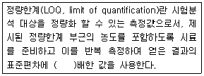
- 2
- 5
- 10
- 20
(정답률: 80%)
65. 휘발성 저급염소화 탄화수소류를 기체크로마토그래피로 정량분석 시 검출기와 운반기체로 옳게 짝지어진 것은?
- ECD - 질소
- TCD - 질소
- ECD - 아세틸렌
- TCD - 헬륨
(정답률: 50%)
66. 흡광도를 이용한 자외선/가시선 분광법에 대한 내용으로 옳지 않은 것은?
- 흡광도는 투과도의 역수이다.
- 램버트-비어 법칙에서 흡광도는 농도에 비례한다는 의미이다.
- 흡광계수가 증가하면 흡광도도 증가한다.
- 검량선을 얻으면 흡광계수 값을 몰라도 농도를 알 수 있다.
(정답률: 49%)
67. 원자흡수분광광도법에 있어서 간섭이 발생되는 경우가 아닌 것은?
- 불꽃이 온도가 너무 낮아 원자화가 일어나지 않는 경우
- 불안정한 환원물질로 바뀌어 불꽃에서 원자화가 일어나지 않는 경우
- 염이 많은 시료를 분석하여 버너 헤드 부분에 고체가 생성되는 경우
- 시료 중에 알칼리금속의 할로겐 화합물을 다량 함유하는 경우
(정답률: 40%)
68. 원자흡수분광광도법으로 크롬 정량 시 공기-아세틸렌 불꽃에서 철, 니켈 등의 공존물질에 의한 방해영향을 최소화하기 위해 첨가하는 물질은?
- 수산화나트륨
- 시안화칼륨
- 황산나트륨
- L-아스코르빈산
(정답률: 49%)
69. 기체크로마토그래피법에 대한 설명으로 옳지 않은 것은?
- 일정 유량으로 유지되는 운반가스는 시료도입부로부터 분리관내를 흘러서 검출기를 통하여 외부로 방출된다.
- 할로겐 화합물을 다량 함유하는 경우에는 분자 흡수나 광산란에 의하여 오차가 발생하므로 추출법으로 분리하여 실험한다.
- 유기인 분석시 추출 용매 안에 함유하고 있는 불순물이 분석을 방해할 수 있으므로 바탕 시료나 시약바탕시료를 분석하여 확인할 수 있다.
- 장치의 기본구성은 압력조절밸브, 유량조절기, 압력계, 유량계, 시료도입부, 분리관, 검출기 등으로 되어 있다.
(정답률: 46%)
70. 폐기물공정시험기준 중 수소이온농도 시험방법에 관한 내용 중 옳지 않은 것은?
- pH는 수소이온농도를 그 역수의 상용대수로서 나타내는 값이다.
- 유리전극을 정제수로 잘 씻고 남아있는 물을 여과지 등으로 조심하여 닦아낸 다음 측정값이 0.5 이하의 pH 차이를 보일 때까지 반복 측정한다.
- 산성표준용액은 3개월, 염기성 표준용액은 산화칼슘 흡수관을 부착하여 1개월 이내에 사용한다.
- pH미터는 임의의 한 종류의 표준용액에 대하여 검출부를 정제수로 잘 씻은 다음 5회 되풀이 하여 측정하였을 때 재현성이 ±0.⑤ 이내의 것을 쓴다.
(정답률: 49%)
71. 폴리클로리네이티드비페닐(PCBs)의 기체크로마토그래피법 분석에 대한 설명으로 옳지 않은 것은?
- 운반기체는 부피백분율 99.999% 이상의 아세틸렌을 사용한다.
- 고순도의 시약이나 용매를 사용하여 방해물질을 최소화하여야 한다.
- 정제컬럼으로는 플로리실 컬럼과 실리카벨 컬럼을 사용한다.
- 농축장치로 구데르나다니쉬(KD)농축기 또는 회전증발농축기를 사용한다.
(정답률: 62%)
72. 용출시험방법에 관한 설명으로 ( )에 옳은 내용은?
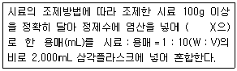
- pH 4 이하
- pH 4.3∼5.8
- pH 5.8∼6.3
- pH 6.3∼7.2
(정답률: 77%)
73. 대상폐기물의 양이 5,400톤인 경우 채취해야 할 시료의 최소 수는?
- 20
- 40
- 60
- 80
(정답률: 81%)
74. 감염성 미생물의 분석방법으로 가장 거리가 먼 것은?
- 아포균 검사법
- 열멸균 검사법
- 세균배양 검사법
- 멸균테이프 감사법
(정답률: 71%)
75. 수분함량이 94%인 시료의 카드뮴(Cd)을 용출하여 실험한 결과 농도가 1.2mg/L이었다면 시료의 수분함량을 보정한 농도(mg/L)는?
- 1.2
- 2.4
- 3.0
- 3.4
(정답률: 62%)
76. 강도 I0의 단색광이 발색 용액을 통과할 때 그 빛의 30%가 흡수되었다면 흡광도는?
- 0.155
- 0.181
- 0.216
- 0.283
(정답률: 65%)
77. 다음 ( )에 들어갈 적절한 내용은?
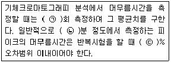
- ㉠ 3, ㉡ 5∼30, ㉢ ±3
- ㉠ 5, ㉡ 5∼30, ㉢ ±5
- ㉠ 3, ㉡ 5∼15, ㉢ ±3
- ㉠ 5, ㉡ 5∼15, ㉢ ±5
(정답률: 53%)
78. 기체크로마토그래피법의 정량분석에 관한 설명으로 ( )에 옳지 않은 것은?
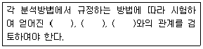
- 크로마토그램의 재현성
- 시료성분의 양
- 분리관의 검출한계
- 피크의 면적 또는 높이
(정답률: 54%)
79. 수소이온농도[H＋]와 pH와의 관계가 올바르게 설명된 것은?
- pH는 [H＋]의 역수의 상용대수이다.
- pH는 [H＋]의 상용대수의 절대상수이다.
- pH는 [H＋]의 상용대수이다.
- pH는 [H＋]의 상용대수의 역이다.
(정답률: 66%)
80. 마이크로파에 의한 유기물분해 방법으로 옳지 않은 것은?
- 밀폐 용기 내의 최고압력은 약 120∼200psi이다.
- 분해가 끝난 후 충분히 용기를 냉각시키고 용기 내에 남아 있는 질산 가스를 제거한다. 필요하면 여과하고 거름종이를 정제수로 2∼3회 씻는다.
- 시료는 고체 0.25g 이하 또는 용출액 50mL 이하를 정확하게 취하여 용기에 넣고 수산화나트륨 10∼20mL를 넣는다.
- 마이크로파 전력은 밀폐 용기 1∼3개는 300W, 4∼6개는 600W, 7개 이상은 1,200W로 조정한다.
(정답률: 45%)
5과목: 폐기물 관계 법규
81. 생활폐기물 수집·운반 대행자에 대한 대행실적 평가 실시 기준으로 옳은 것은?
- 분기에 1회 이상
- 반기에 1회 이상
- 매년 1회 이상
- 2년간 1회 이상
(정답률: 65%)
82. 위해의료폐기물 중 조직물류폐기물에 해당되는 것은?
- 폐혈액백
- 혈액투석 시 사용된 폐기물
- 혈액, 고름 및 혈액생성물(혈청, 혈장, 혈액제제)
- 폐항암제
(정답률: 79%)
83. 폐기물을 매립하는 시설의 사후관리기준 및 방법 중 발생가스 관리방법(유기성폐기물을 매립한 폐기물매립 시설만 해당됨)에 관한 내용으로 ( )에 옳은 것은?
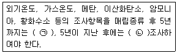
- ㉠ 주 1회 이상, ㉡ 월 1회 이상
- ㉠ 월 1회 이상, ㉡ 연 2회 이상
- ㉠ 분기 1회 이상, ㉡ 연 2회 이상
- ㉠ 분기 1회 이상, ㉡ 연 1회 이상
(정답률: 60%)
84. 폐기물발생억제 지침 준수의무 대상 배출자의 규모기준으로 ( )에 옳은 것은?
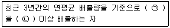
- ㉠ 지정폐기물, ㉡ 300톤
- ㉠ 지정폐기물, ㉡ 500톤
- ㉠ 지정폐기물 외의 폐기물, ㉡ 500톤
- ㉠ 지정폐기물 외의 폐기물, ㉡ 1,000톤
(정답률: 59%)
85. 폐기물처리업자 중 폐기물 재활용업자의 준수사항에 관한 내용으로 ( )에 옳은 것은?
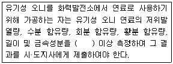
- 매 년당 1회
- 매 분기당 1회
- 매 월당 1회
- 매 주당 1회
(정답률: 60%)
86. 폐기물 수집·운반업자가 의료폐기물을 임시보관 장소에 보관할 수 있는 환경조건과 기간은?
- 섭씨 6도 이하의 일반보관시설에서 8일 이내
- 섭씨 4도 이하의 일반보관시설에서 5일 이내
- 섭씨 6도 이하의 전용보관시설에서 8일 이내
- 섭씨 4도 이하의 전용보관시설에서 5일 이내
(정답률: 68%)
87. 폐기물처리시설에 대한 기술관리대행계약에 포함될 점검항목으로 틀린 것은?(단, 중간처분시설 중 소각시설 및 고온열분해시설)
- 안전설비의 정상가동 여부
- 배출가스 중의 오염물질의 농도
- 연도 등의 기밀유지상태
- 유해가스처리시설의 정상가동 여부
(정답률: 45%)
88. 설치신고대상 폐기물처리시설기준으로 알맞지 않은 것은?
- 지정폐기물소각시설로서 1일처리능력이 10톤 미만인 시설
- 열처리조합시설로서 시간당 처리능력이 100킬로그램 미만인 시설
- 유수분리시설로서 1일 처리능력이 100톤 미만인 시설
- 연료화시설로서 1일 처리능력이 100톤 미만인 시설
(정답률: 34%)
89. 대통령령으로 정하는 폐기물처리시설을 설치·운영하는 자는 그 폐기물처리시설의 설치·운영이 주변 지역이 미치는 영향을 3년마다 조사하고, 그 결과를 환경부장관에게 제출하여야 한다. 대통령령으로 정하는 폐기물처리시설과 가장 거리가 먼 것은?
- 1일 처분능력이 50톤 이상인 사업장폐기물소각시설
- 매립면적 1만 제곱미터 이상의 사업장 지정폐기물 매립시설
- 매립면적 10만 제곱미터 이상의 사업장 일반폐기물 매립시설
- 시멘트 소성로(폐기물을 연료로 사용하는 경우로 한정한다.)
(정답률: 62%)
90. 폐기물처리시설인 재활용시설 중 화학적 재활용 시설이 아닌 것은?
- 고형화·고화 시설
- 반응시설(중화·산화·환원·중합·축합·치환 등의 화학반응을 이용하여 폐기물을 재활용하는 단위시설을 포함한다.)
- 연료화 시설
- 응집·침전 시설
(정답률: 63%)
91. 폐기물관리법에서 사용하는 용어의 뜻으로 틀린 것은?
- 폐기물：쓰레기, 연소재, 오니, 폐유, 폐산, 폐알칼리 및 동물의 사체 등으로서 사람의 생활이나 사업활동에 필요하지 아니하게 된 물질을 말한다.
- 폐기물처리시설：폐기물의 중간처분시설 및 최종처분시설 중 재활용처리시설을 제외한 환경부령으로 정하는 시설을 말한다.
- 지정폐기물：사업장폐기물 중 폐유·폐산 등 주변 환경을 오염시킬 수 있거나 의료폐기물 등 인체에 위해를 줄 수 있는 해로운 물질로서 대통령령으로 정하는 폐기물을 말한다.
- 폐기물감량화시설：생산 공정에서 발생하는 폐기물의 양을 줄이고, 사업장 내 재활용을 통하여 폐기물 배출을 최소화하는 시설로서 대통령령으로 정하는 시설을 말한다.
(정답률: 68%)
92. 기술관리인을 두어야 하는 폐기물처리시설이라 볼 수 없는 것은?
- 1일 처리능력이 120톤인 절단시설
- 1일 처리능력이 150톤인 압축시설
- 1일 처리능력이 10톤인 연료화시설
- 1일 처리능력이 50톤인 파쇄시설
(정답률: 57%)
93. 폐기물관리법령상 폐기물 중간처분시설의 분류 중 기계적 처분시설에 해당되지 않는 것은?
- 멸균분쇄시설
- 세척시설
- 유수 분리시설
- 탈수·건조시설
(정답률: 49%)
94. 폐기물처리시설 주변지역 영향조사 기준 중 조사방법(조시지점)에 관한 기준으로 옳은 것은?
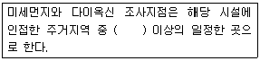
- 2개소
- 3개소
- 4개소
- 5개소
(정답률: 63%)
95. 관리형 매립시설에서 발생하는 침출수의 부유물질 허용기준(mg/L 이하)은?(단, 가지역 기준)
- 20
- 30
- 50
- 70
(정답률: 69%)
96. 폐기물관리법상 대통령령으로 정하는 사업장의 범위에 해당하지 않는 것은?
- 하수도법에 따라 공공하수처리시설을 설치·운영하는 사업장
- 폐기물을 1일 평균 300킬로그램 이상 배출하는 사업장
- 건설산업법에 따른 건설공사로 폐기물을 3톤(공사를 착공할 때부터 마칠 때까지 발생되는 폐기물의 양을 말한다) 이상 배출하는 사업장
- 폐기물관리법에 따른 지정폐기물을 배출하는 사업장
(정답률: 59%)
97. 에너지회수기준을 측정하는 기관이 아닌 것은?
- 한국환경공단
- 한국기계연구원
- 한국산업기술시험원
- 한국시설안전공단
(정답률: 59%)
98. 의료폐기물 전용용기 검사기관으로 옳은 것은?
- 한국의료기기시험연구원
- 환경보전협회
- 한국건설생활환경시험연구원
- 한국화학시험원
(정답률: 46%)
99. 광역폐기물처리시설의 설치·운영을 위탁받은 자가 보유하여야 할 기술인력에 대한 설명으로 틀린 것은?
- 매립시설：9,900제곱미터 이상의 지정폐기물 또는 33,000제곱미터 이상의 생활폐기물을 매립하는 시설에서 2년 이상 근무한 자 2명
- 소각시설：1일 50톤 이상의 폐기물소각시설에서 폐기물 처분시설의 운영을 위탁받으려고 할 경우 천정크레인을 1년 이상 운전한 자 2명
- 음식물류 폐기물 처분시설：1일 50톤 이상의 음식물류 폐기물 처분시설의 설치를 위탁받으려고 할 경우에는 시공분야에서 2년 이상 근무한 자 2명
- 음식물류 폐기물 재활용시설：1일 50톤 이상의 음식물류 폐기물 재활용시설의 운영을 위탁받으려고 할 경우에는 운전분야에서 2년 이상 근무한 자 2명
(정답률: 55%)
100. 폐기물처리업자는 장부를 갖추어 두고 폐기물의 발생·배출·처리상황 등을 기록하고, 보존하여야 한다. 장부를 보존해야 할 기간으로 ( )에 맞는 것은?
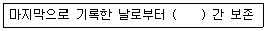
- 1년
- 3년
- 5년
- 7년
(정답률: 70%)
MHT = (쓰레기 발생량 / 수거인 부수) / (1일 작업시간 x (365 - 연간 휴가일수))
MHT = (165,000 / 148) / (8 x (365 - 90))
MHT = 2
따라서, 정답은 "2"입니다.